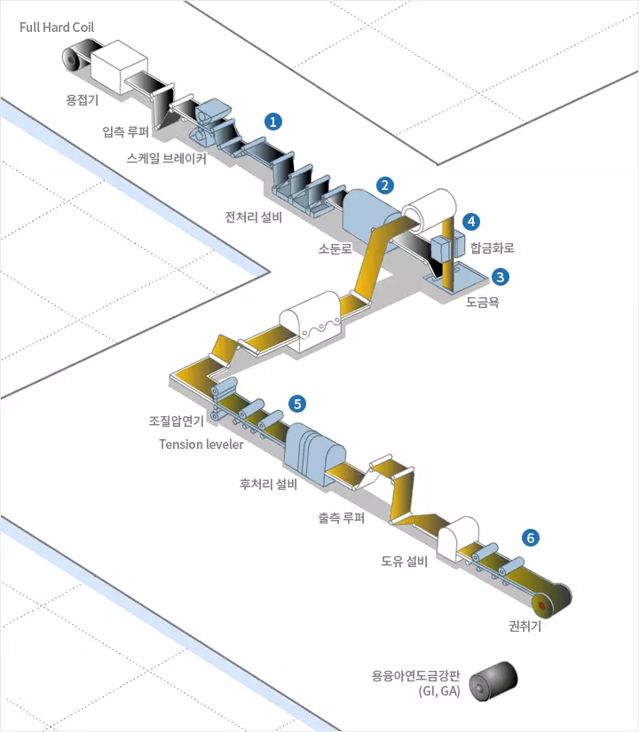
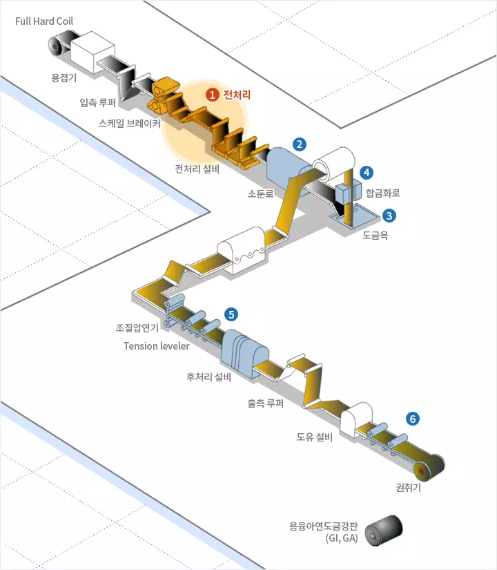
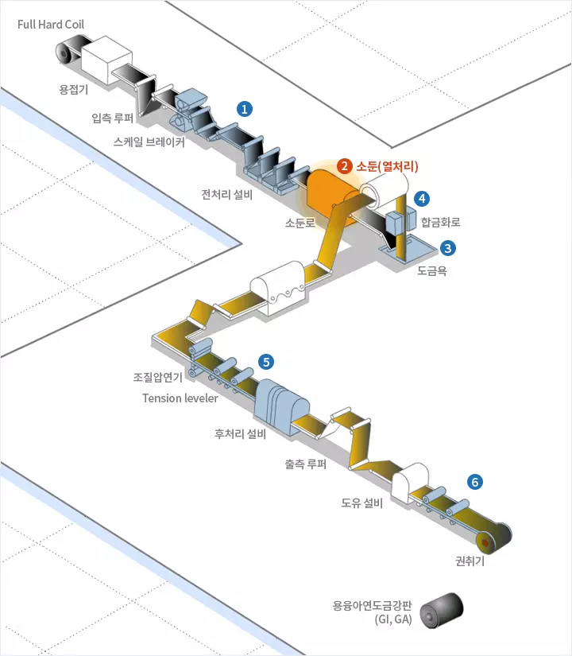
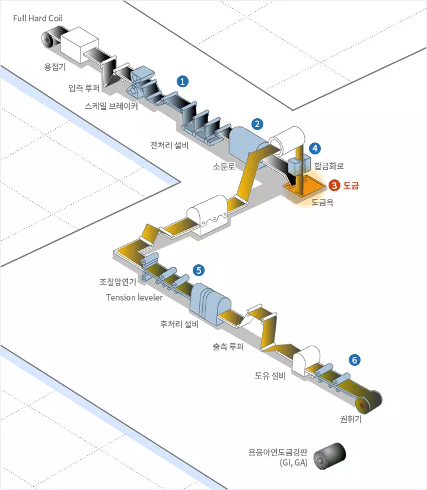
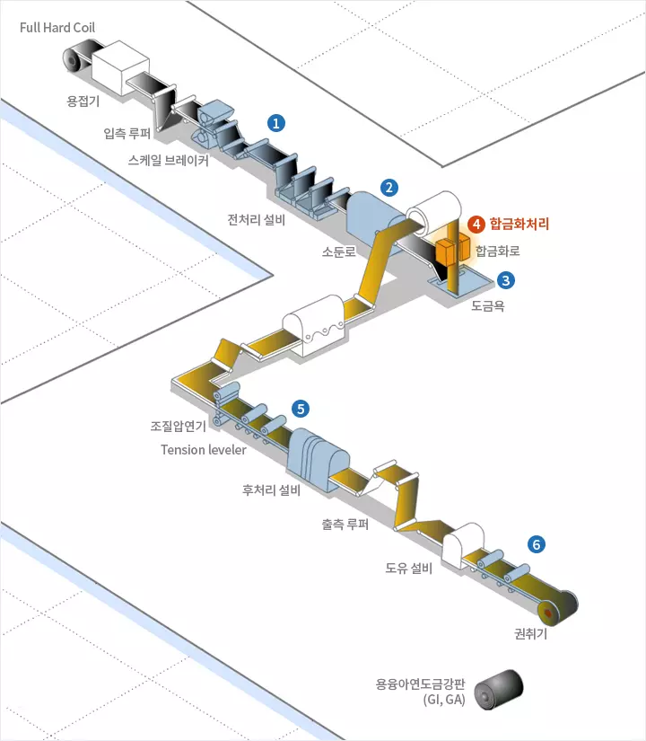
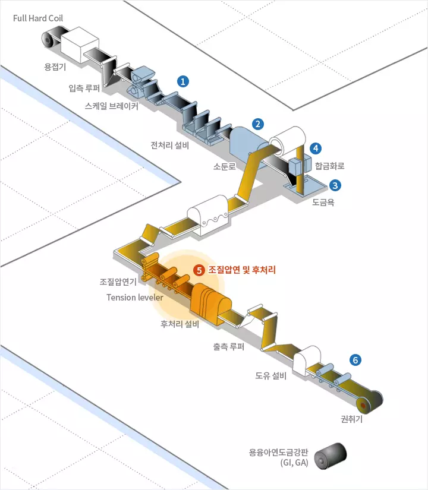
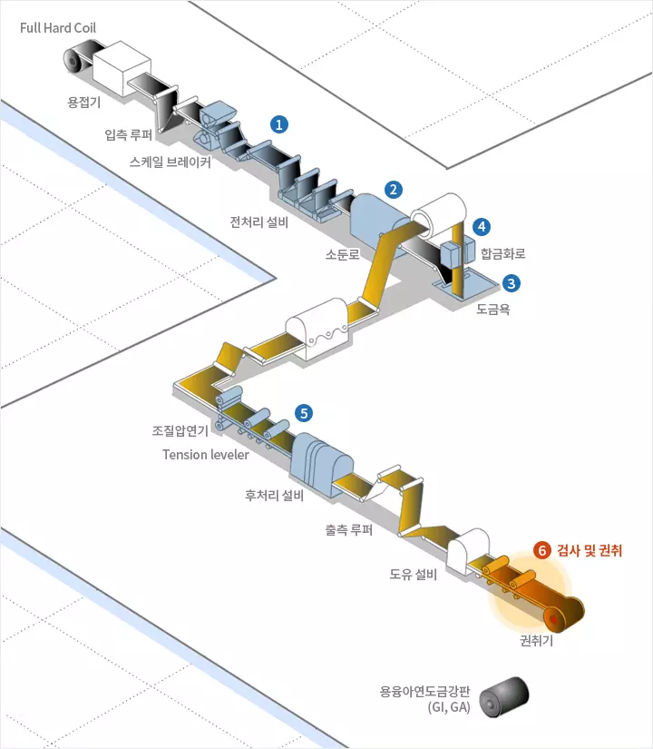

PRODUCTION
제조공정
제조공정
열연
냉연
용융아연도금
전기아연도금
>
용융아연도금
1.전처리
냉간압연한 강판은 표면에 압연유가 존재하며, 각종 오물이 남아 있기 때문에 알칼리 용액에 통과시켜 전기, 화학적 반응을 이용하여 제거합니다.
2.소둔(열처리)
전처리를 거친 강판은 소둔에서 재결정이 되어 소정의 기계적 성질을 확보합니다.
3.도금
소둔로를 거친 강판은 용융된 아연을 부착시켜, 에어 나이프(Air Knife) 설비로부터 고압의 공기를 분사하여 목표로 하는 도금부착량을 얻어냅니다.
4.합금화 처리
에어 나이프(Air Knife)를 통과한 강판은 도금층을 재가열함으로써 Fe와 Zn의 확산을 통해 도금층을 Zn-Fe계로 합금화 시킵니다.
5.조질압연 및 후처리
깔끔한 형상과 미려한 표면을 얻기 위하여 스킨 패스 밀(Skin Pass Mill)을 통과시킨 후 활성화된 아연 표면에 발생하기 쉬운 백청을 방지하고, 내식성을 향상시키기 위하여 후처리를 실시합니다.
6.검사 및 권취
출측 설비는 사이드 트리머(Side Trimmer), 검사대, 주유기, 권취 설비로 구성되어 있으며 고객사가 원하는 제품으로 적합한지 종합적으로 검사하고 판정합니다.






